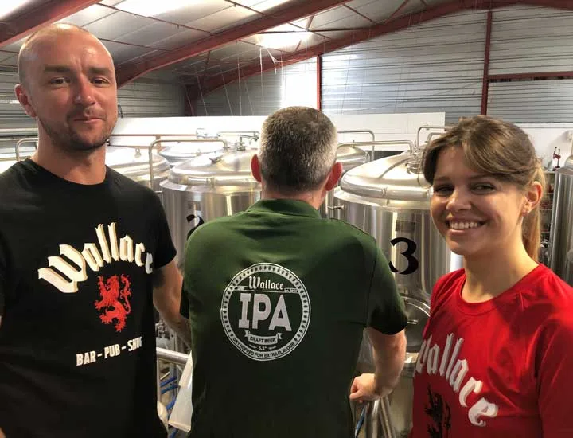
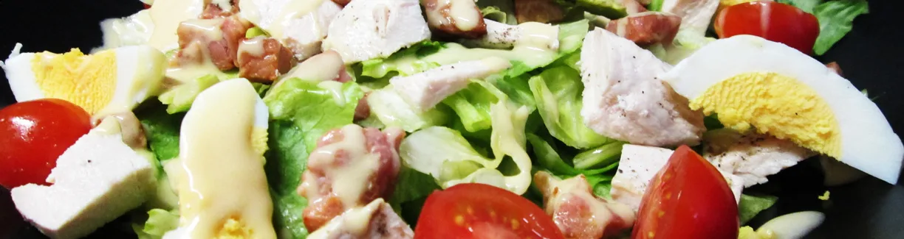
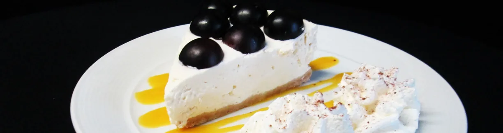
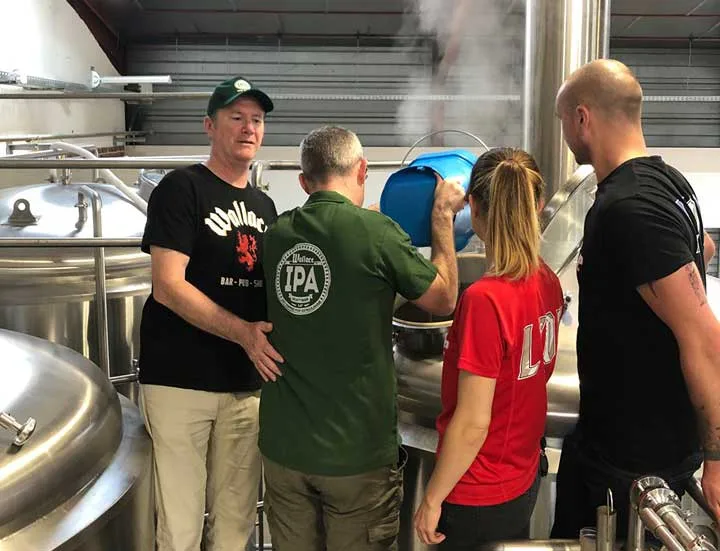
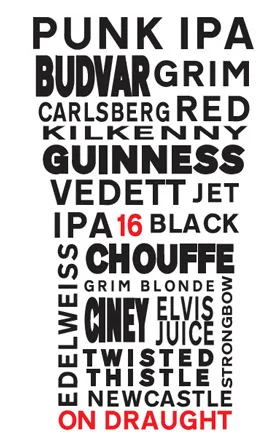
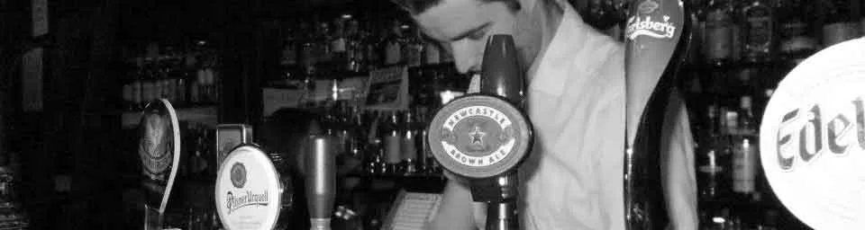
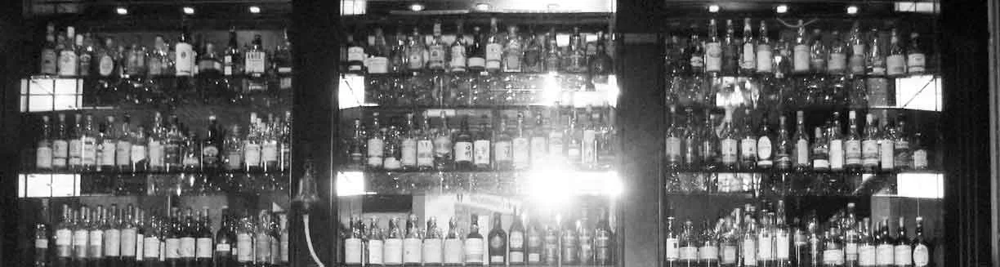
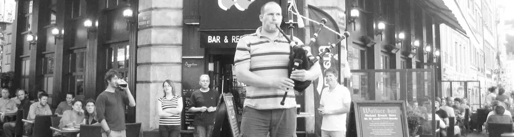

Everyday pub
2 Rue Octavio Mey
Vieux-Lyon, au bord de la Saône
Le pub du Vieux-Lyon qui brasse sa bière

Ouvert tous les jours dès 11h. Fish and chips, burgers, whisky et le sport en direct sur 4 écrans.
Aujourd'hui
- Bar
- Horaires dans le tableau de la semaine.
- Cuisine
- Midi et soir, voir la carte.
- Ce soir
- Sport en direct sur 4 écrans.
Cuisine
- MidiLundi au samedi, 12h à 15h
Dimanche, 11h à 15h - SoirLundi au samedi, 19h à 22h
Dimanche, 18h30 à 22h - Plat du jourÀ midi, du lundi au vendredi
À table
- Wallace Burger
- bœuf18 €
- poulet16 €
- fish17 €
- veggie16 €
- Double Burger22 €
- Haggis Burger20 €
- Pulled Pork16 €
- Club16 €
- Wings10 €
- Sliders11 €
- Loaded Fries8 à 11 €
- Saumon confit18 €
- Tartare18 €
- Poke saumon18 €
- Cobb15 €
- Buddha Bowl15 €
- Salmorejo13 €
- Menu enfant9 €
- Desserts maison
- Planches
Brunch british
La cuisine ouvre à 11h le dimanche.


Allergènes : demandez au comptoir.
Bière
Brasserie maison
Le Wallace brasse sa propre bière
- Wallace IPA
- Double IPA
- Lager
- NEIPA

16 pressions
Brewdog, Guinness, Galway Bay, La Chouffe, Lagunitas.
- Sans alcool
- Punk AF, Guinness 0.0
- Gins
- Fever-Tree, +2 €
- Aussi
- bouteilles, canettes, vins



Whisky
Le Wallace a aussi son Whisky Club.
Wee whisky list
- Écosse
- Irlande
- Monde
Pour la carte du moment, demandez au comptoir ou appelez.
Appeler le 04 72 00 23 91
La semaine
Tous les grands sports en direct sur 4 grands écrans : rugby, football, darts.
La semaine au Wallace
| Jour | Bar | Cuisine |
|---|---|---|
| LundiQuiz, 20h30 | 11h à 00h30 | 12h à 15h, 19h à 22h |
| Mardi à jeudi | 11h à 00h30 | 12h à 15h, 19h à 22h |
| Vendredi, samedi | 11h à 02h30 | 12h à 15h, 19h à 22h |
| Dimanche | 11h à 00h30 | 11h à 15h, 18h30 à 22h |
Le quiz du lundi : « le plus grand de Lyon », avec des verres gratuits à gagner.
- Wallace Craft Beer
- Wallace on Tour, concours photo
- Concerts réguliers, dont la Fête de la Musique
- Whisky Club

Presse
Coupe du monde féminine 2019
La vidéo du Wallace a fait le tour du monde
Pendant le Mondial féminin 2019, une vidéo tournée dans le bar est devenue virale. Elle a été relayée par :
- Rolling Stone
- USA Today
- Fox News
- The Guardian
Le Wallace est aussi cité par Le Progrès, ExitMag, Spot Web et Découvrir Auvergne-Rhône-Alpes.